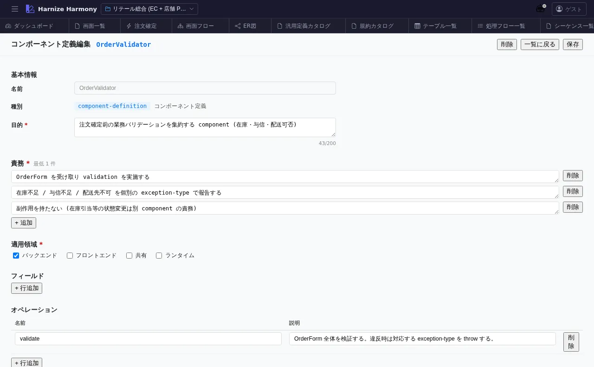

汎用定義編集
対象画面:
GenericDefinitionEditor(frontend/src/components/generic-definition/GenericDefinitionEditor.tsx) ルート:/w/:wsId/generic-definition/:kind/:name種別: マルチインスタンスタブ
概要
汎用定義 (Generic Definition) 1 件を編集する画面。kind に応じた form を出し分け、component-definition ならコンポーネント仕様 / constants なら定数集合 / data-contract ならフィールド契約 / glossary-term なら用語集エントリ などを編集する。
到達経路
- 汎用定義一覧 (kind 別) (
/generic-definition/:kind) → 行クリック - 汎用定義カタログ (
/generic-definition) のエントリプレビューリンク - 直接 URL:
/w/<wsId>/generic-definition/<kind>/<name>(例:/generic-definition/component-definition/OrderValidator)
画面構成

主要エリア
- EditorHeader — 「<kind 表示名>:
」 + id 変更 + 保存 - メタ情報 — 名前 / 論理名 / 説明 / source / 成熟度
- kind 固有 form — kind ごとに動的に出し分け
component-definition: props / lifecycle / responsibilities / examplesconstants: key-value 表data-contract: fields (name / type / required / description) 表domain-event: payload / triggers / consumersapplication-rule: condition / actionpolicy: scope / criteria / consequenceglossary-term: term / definition / aliases / examplesrfc: status / authors / decision / rationale
- JSON プレビュー (折りたたみ) — schema 準拠の生 JSON
主要操作
| 操作 | 手段 | 結果 |
|---|---|---|
| フィールド編集 | 各 form 要素 | inline 編集 |
| 表型フィールド (data-contract / constants) | 「行追加」 / 行ドラッグ / 「削除」 | 表編集 (DataList 共通 UI) |
| 保存 / 破棄 | Ctrl+S / 「破棄」 | edit-session 経由 |
| rename | EditorHeader の id 変更 | RenameEntityDialog (kind 内で unique) |
データ前提
- 新規: 空フォーム、kind の必須フィールドを入れた時点で意味
- 意味のある状態: retail の
OrderValidator(component-definition) は注文確定時のバリデーション仕様
関連仕様書
docs/spec/generic-definition-layer.md— kind 毎の必須スキーマdocs/spec/draft-state-policy.md— schema 違反保存可 + warning 可視化
関連 skill
/import-md— 既存 markdown を data-contract / glossary-term に変換
既知の制約・注意
- kind 変更は 想定外 (kind は新規作成時に固定、変更したい場合は別 kind で新規作成 + 旧を delete)
- 表型フィールドは
DataList共通 UI なので、画面項目編集等と同様の操作 (rename / コピペ / 並び替え) - source
framework/extensionの定義は read-only